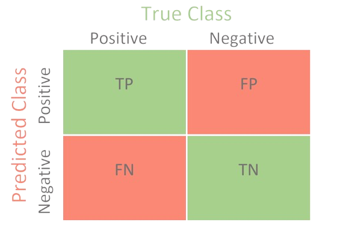

Understanding (and Distinguishing) Common Algorithmic Fairness Metrics
fairness metrics from Machines Gone Wrong.
Algorithms are becoming an increasingly ubiquitous component of decision-making with high moral stakes, such as loan and mortgage approval, governmental aid allocations, health insurance claim approval, and US bail and sentencing procedures. With the growing use of algorithms in settings with high moral stakes, there has also been a growing concern about algorithmic fairness, or more specifically, whether an algorithm used to make decisions in such settings is (un)fair.
Many statistical metrics have been developed to assess whether a given algorithm is (un)fair. Since 2022, I have been interested in these measures and how they track with discussions of fairness and justice coming from Philosophy – a field which has been theorizing about fairness and justice for more than two millennia. However, when doing research on statistical metrics of fairness, I realized that the definitions of such metrics tend to be scattered across multiple papers, making it difficult to understand how different metrics compare (or motivate) one another.
In this notebook, I provide an overview of common algorithmic fairness metrics coming from Statistics and draw comparison between the described metrics. For simplicity, I focus on outcome-based measures of fairness (i.e., metrics that evaluate an algorithm for fairness using its outputted predictions), though, I hope to delve into more procedural-based fairness measures sometime in the future. Additionally, since many of the common fairness metrics are for discrete prediction problems, I primarily focus on those metrics in this notebook rather than fairness metrics for continuous prediction problems.
Some Key Terms
True Positives, False Positives, True Negatives, and False Negatives

Most fairness metrics for discrete prediction algorithms use some combination of true positives, true negatives, false positives, and false negatives in their calculations. A helpful way of visualizing the difference between terms is through a confusion matrix (like the one depicted for a binary prediction algorithm on the left). Notice how true positives, true negatives, false positives, and false negatives all rely on comparing an observation’s predicted class to its true (or actual) class. Specifically, a true positive (TP) is when observation’s true class and predicted class are both positive, and a false positive (FP) is when the observation’s true class is positive but its predicted class is not. On the other hand, a true negative (TN) is when observation’s true class and predicted class are both negative, and a false negative (FN) is when the observation’s true class is positive but its predicted class is not.
An Real-World Example: The Correctional Offender Management Profiling for Alternative Sanctions (COMPAS) algorithm is used in US courtrooms to assess the likelihood of a defendant becoming a recidivist (i.e. being re-convicted) by assigning each defendant a score between 1-10 based on their predicted likelihood of recidivism. A defendant is considered to have a low risk of recidivism if their COMPAS score is between 1-4 and medium to high risk of recidivism if their COMPAS score is between 5-10. In ProPublica’s seminal analysis of COMPAS, true positives, false positives, true negatives, and false negatives are defined as follows:1
- A true positive is when a defendant receives a COMPAS score between 5-10 and is re-convicted in the two years after they were scored.
- A false positive is when a defendant receives a COMPAS score between 5-10 but is not re-convicted in the two years after they were scored.
- A true negative is when a defendant receives a COMPAS score between 1-4 and is not re-convicted in the two years after they were scored.
- A false negative is when a defendant receives a COMPAS score between 1-4 but is re-convicted in the two years after they were scored.
Conditional Probability
Another important term to understand when talking about statistical fairness metrics is conditional probability which is the probability of an event some other event occurs. Let A and B be two events, where B has a non-zero probability of occurring, then the conditional probability of A given B (i.e. \(\mathbb{P}(A|B)\)) can be calculated as follows:
\[\mathbb{P}(A|B) = \frac{\mathbb{P}(A\cap B)}{\mathbb{P}(B)}\]
In real-life, we rarely know the true probability of events occurring. Instead, one can estimate this probability empirically using the sample estimate. That is, one can find the proportion of times that both event A and event B occurred out of the total number of times event B occurred within the sample. Oftentimes, in the context of algorithmic fairness metrics, sample estimates that relevant conditional probabilities are computed by comparing the true positives, false positives, true negatives, and/or false negatives between relevant groups.
Algorithmic Fairness Metrics
Equal Accuracy
Perhaps the most flat-footed algorithmic fairness metric is Equal Accuracy, which says that an algorithm is unfair if it has unequal accuracy across relevant groups. For instance, suppose we had two relevant groups, denoted as A and B. Then, according to Equal Accuracy, an algorithm is unfair if:2
\[\mathbb{P}(\mathrm{Pred.~Class = True~Class~|~Group = A}) \neq \mathbb{P}(\mathrm{Pred.~Class = True~Class~|~Group = B})\] which is to say, an algorithm is unfair when the probability that the predicted class is the same as the true class is different between relevant groups.
Predictive Parity (sometimes also called Equal Opportunity)
However, depending on the context of the algorithm, it might be more crucial from the perspective fairness to ensure that there is equal accuracy between groups among those predicted as part of the positive class, rather than simply guaranteeing that there is equal accuracy between the relevant groups in general (i.e., unconditioned on the individual’s predicted class). The fairness metric of Predictive Parity captures this concern. According to Predictive Parity, an algorithm is unfair between relevant groups A and B if:
\[\mathbb{P}(\mathrm{True~Class = 1|~Pred.~Class =1,~Group = A}) \neq \mathbb{P}(\mathrm{True~Class = 1|~Pred.~Class = 1,~Group = B})\] Notice how Predictive Parity relates to the algorithm’s Positive Predictive Value (PPV) or Precision. Specifically, when an algorithm satisfies Predictive Parity, we expect for the PPV for the relevant groups to be equal. That is for:
\[\left( \frac{TP + FN}{TP + FP} \right)_\mathrm{Group~=~A} = \left( \frac{TP + FN}{TP + FP} \right)_\mathrm{Group~=~B}\] Sometimes, Predictive Parity is also referred to as the Equal Opportunity metric. ADD
Equal False Positive Rates
Like Predictive Parity, Equal False Positive Rates also equalizes prediction performance among only a subset of individuals. Per the Equal False Positive Rates metric, an algorithm is unfair if e probability that it mispredicts an individual whose true class is positive as negative is different between relevant groups, or written formally if:
\[\mathbb{P}(\mathrm{Pred.~Class = 1|~True~Class = 0,~Group = A}) \neq \mathbb{P}(\mathrm{Pred.~Class = 1|~True~Class = 0,~Group = B})\]
Here, the goal of Equal False Positive Rates is to prevent an algorithm from
Equal False Negative Rates
Along a similar vein to Equal False Positive Rates is Equal False Negative Rates, which says that an algorithm is unfair if the probability that it mispredicts an individual whose true class is negative as positive is different between relevant groups. That is:
\[\mathbb{P}(\mathrm{Pred.~Class = 0|~True~Class = 1,~Group = A}) \neq \mathbb{P}(\mathrm{Pred.~Class = 0|~True~Class = 1,~Group = B})\]
Equal Ratios of False Positive Rates to False Negative Rates
A looser requirement for algorithmic fairness is Equal Ratios of False Positive Rates to False Negative Rates, which does not need neither Equal False Positive Rates nor Equal False Negative Rates between relevant groups. Putting together the formalizations of the two prior metrics, we get that an algorithm is unfair, according to Equal Ratios of False Positive Rates to False Negative Rates, if:
\[\frac{\mathbb{P}(\mathrm{Pred.~Class = 1|~True~Class = 0,~Group = A})}{\mathbb{P}(\mathrm{Pred.~Class = 0|~True~Class = 1,~Group = A})} \neq \frac{\mathbb{P}(\mathrm{Pred.~Class = 1|~True~Class = 0,~Group = B})}{\mathbb{P}(\mathrm{Pred.~Class = 0|~True~Class = 1,~Group = B})}\]
One reason why we might care about Equal Ratios of False Positive Rates to False Negative Rates for algorithmic fairness is because we care about the algorithm
Demographic/Statistical Parity
\[\mathbb{P}(\mathrm{Pred.~Class = 1~|~Group = A}) \neq \mathbb{P}(\mathrm{Pred.~Class = 1~|~Group = B})\]
Equalized Odds
\[\mathbb{P}(\mathrm{Pred.~Class = 1|~True~Class = X,~Group = A}) \neq \mathbb{P}(\mathrm{Pred.~Class = 1|~True~Class = X,~Group = B})\] where \(X \in \{0,1\}\)
Calibration within Groups
Balance for Positive Class
Balance for Negative Class
Footnotes
From the COMPAS example, can already see a point of contention in characterizing algorithmic fairness for discrete prediction problems, which is what threshold to use for decision-making. For example, why separate low from medium to high risk of recidivism at 4-5 rather than 3-4 or 5-6?↩︎
You might notice that in this notebook, I interpret each fairness metric as a necessary but not necessarily sufficient condition of algorithm fairness, meaning that an algorithm would be considered unfair if it does not satisfy X metric necessary for algorithmic fairness but it would not necessarily be fair if it does satisfy the required metric. This, in my opinion, is the most charitable way of interpreting the common statistical fairness metrics that I discuss in this notebook.↩︎